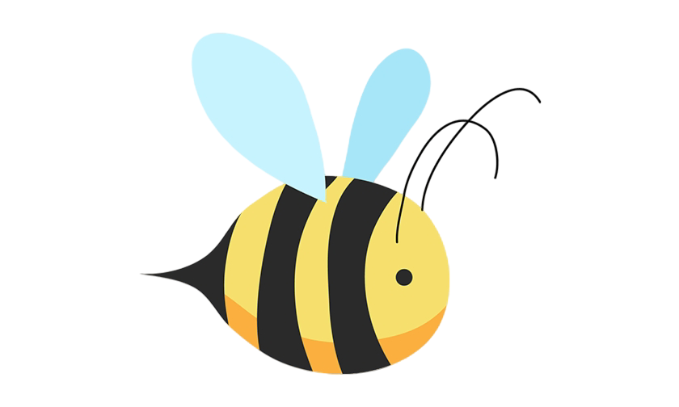
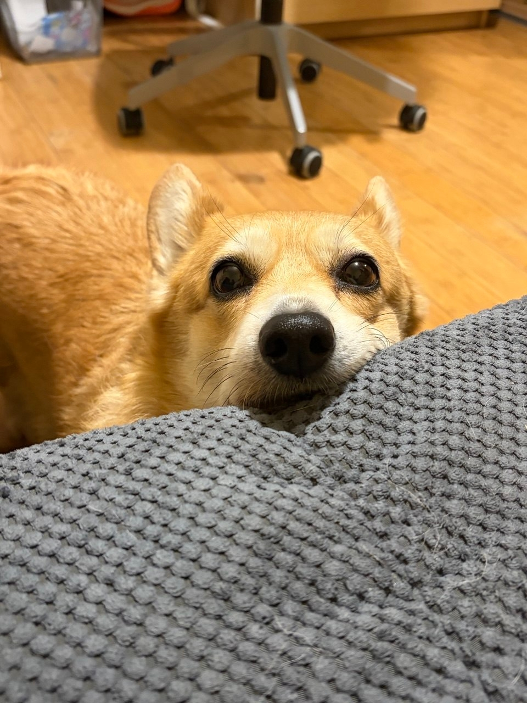
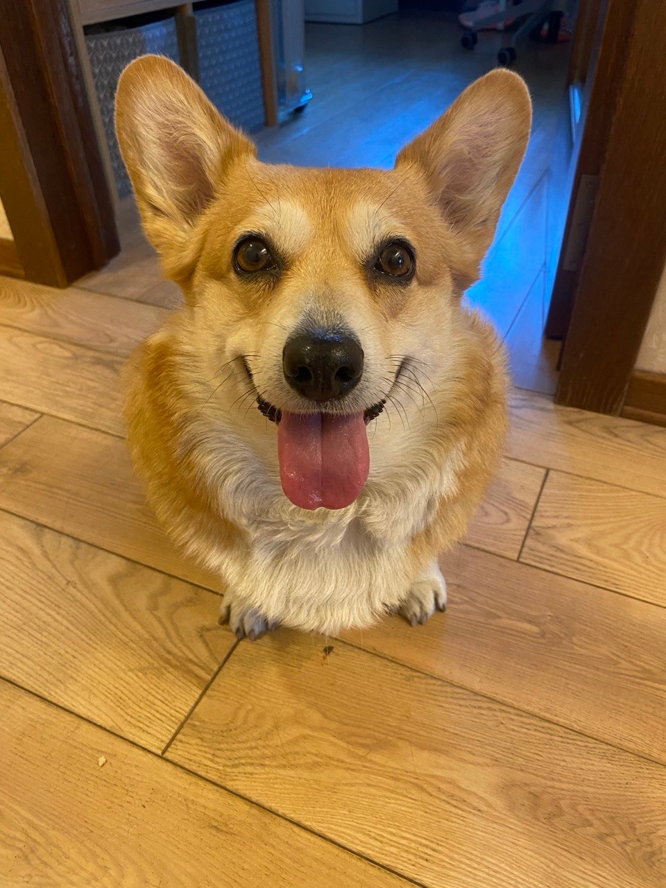

Самая очаровательная корги на свете!


Вельш-корги — одна из древнейших пород собак, которая появилась в Уэльсе более 3000 лет назад. Эти очаровательные коротколапые пастухи были верными помощниками фермеров, охраняя стада и защищая хозяйство от хищников.
По древней валлийской легенде, корги были ездовыми собаками лесных фей! Однажды дети нашли двух щенков в лесу и принесли домой. Родители сказали, что это подарок от фей, и с тех пор корги считаются волшебными собаками. У некоторых корги даже есть отметина на спине в форме седла — след от волшебного седла фей!
Название «корги» происходит от валлийских слов: «cor» (карликовый) и «gi» (собака). Существует две разновидности породы: вельш-корги пемброк и вельш-корги кардиган. Зефирка, скорее всего, относится к пемброкам — они более популярны и известны своей любовью к королевской семье Великобритании.
Сегодня вельш-корги — это не только рабочие собаки, но и популярные домашние питомцы по всему миру. Их очаровательная внешность, весёлый нрав и преданность делают их идеальными членами семьи. Зефирка — яркое доказательство того, что корги приносят радость и счастье в каждый дом!